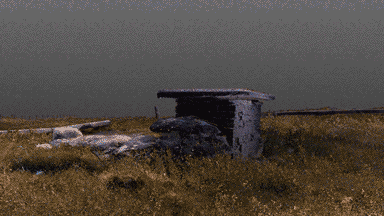

no_matter_here commissioned the following artists to create .gifs for this site:

Michelle Doyle is an artist and musician based in Ireland, working through sound, performance, set design and moving image. Her work is concerned with subculture, politics, technology, freedom and communities. She uses automatic writing as part of her practice; including collected data, manifestos and other written ephemera in order to create confrontational spoken performances. Doyle performs with sound group, The Healers and solo as Rising Damp.
Doyle is a resident artist in Fire Station Studios in Dublin and is supported by the Arts Council of Ireland.
Artist not on instagram but represented by Brass Neck Press Management and PR
Website
Gary Merrin’s work explores Culture, Publishing and the Printed Image. Gary's output includes; Photography, Print, Painting and Publication. Recently, he has started an editions service (Transient Editions) to distribute artist's work using a refurbished Risograph printer.
Instagram: @gary_merrin
@transient_editions
Twitter
Website

Anthony O’Connor take’s the voyage of Saint Brendan "the Navigator", "the Voyager", and "the Bold" as his point of departure for this series of images. The images reconstruct sites of communication through maps, models and images. These images form part of a broader moving image work currently in production exploring representation, communication and extraction.
Anthony O’Connor is part-time administrator at the @eclipticofculture , where he distracts himself from his image based practice.
Aoife O'Toole AKA DJ Egg is an illustrator and creative designer from Co.Kildare that gets their inspiration from music and community.
They are resident DJ of @hausofsidhe drag collective and have a monthly show on dublindigitalradio. Their work is inspired by personal experience, memories and the people around them.